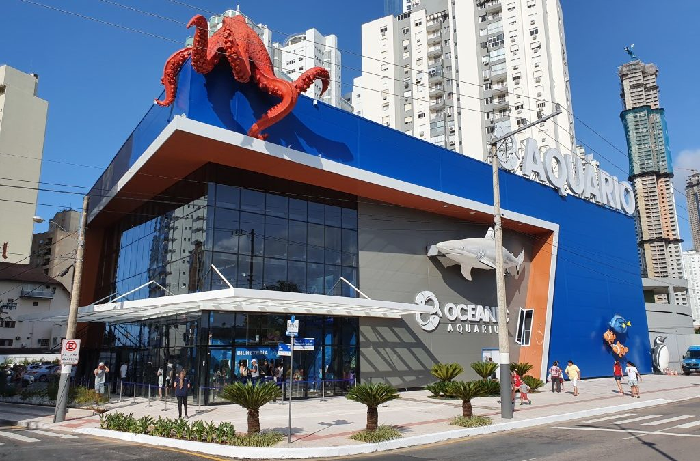
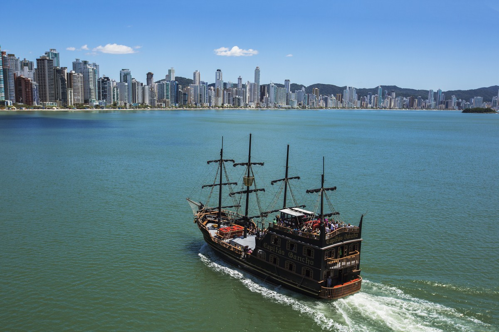

Oceanic Aquarium
Outra curiosidade sobre Balneário Camboriú é que ela abriga o maior aquário do sul do Brasil. O Oceanic Aquarium conta com 25 tanques e 2,2 mil metros². Composto por 3 pavimentos, mostra o mundo fascinante das espécies marinhas, com 250 espécies de 6 continentes.

Barco Pirata
O passeio de Navio Pirata é uma tradição na cidade que agrada pessoas de todas as idades. O barco animado é uma curiosidade para os turistas, afinal ele é o único barco de passeio temático da região que sai da Barra Sul em direção à Praia de Laranjeiras apresentando um divertido teatro repleto de danças e música.
A atração agrada não só turistas, mas também moradores, visto que é uma forma de fazer o percurso de bondinho até a Praia de Laranjeiras e tomar o navio de volta para a Barra Sul após uma tarde de descanso.